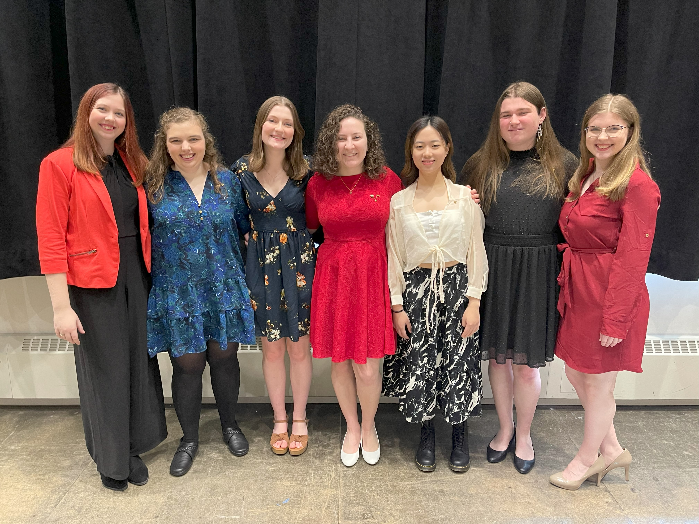
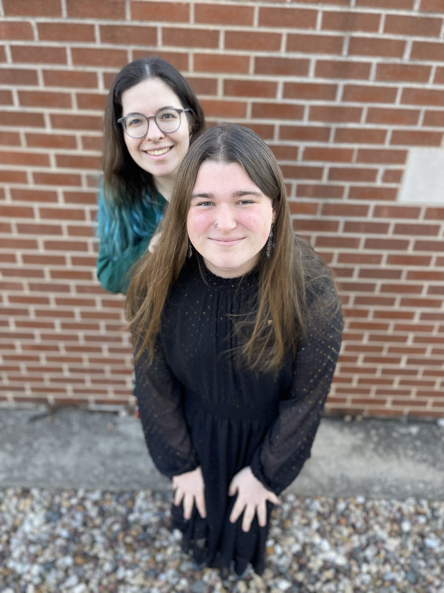
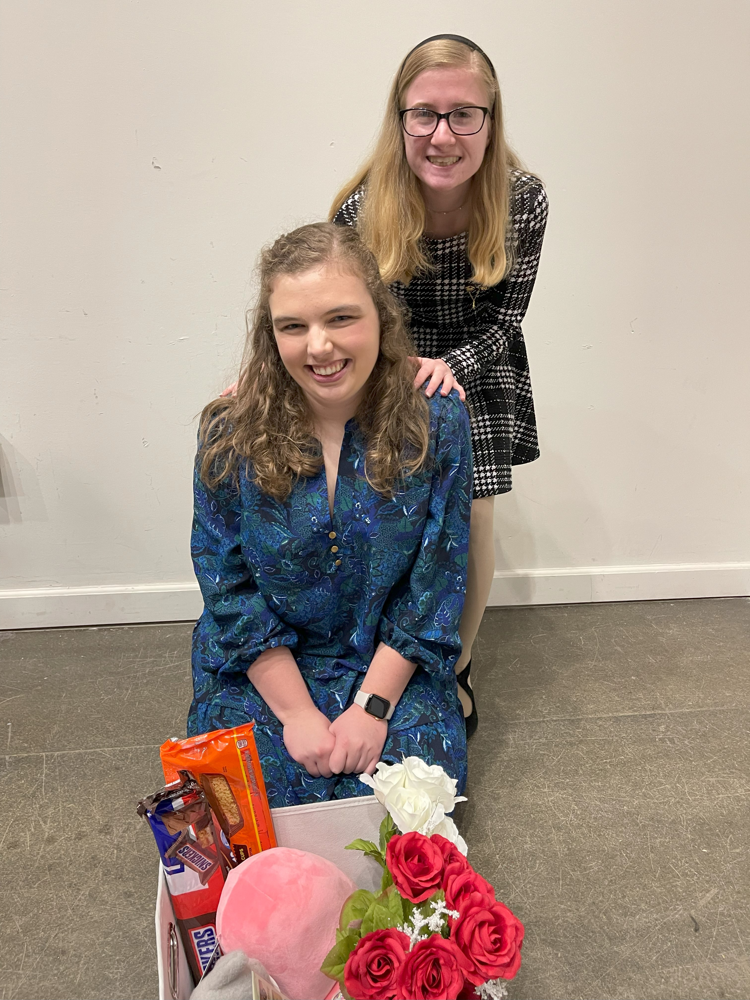

So, I've decided to join SAI. What now?
After you turn in your bid and attend the initial event, you will become an SAI Member-in-Training, or MIT. Your
MIT season will last about 2 months, where you will prepare to become a full member. In this crucial period, you will do several things:
Meet your MIT class and VPM
At the inital event, you will get to meet the other members-in-training, which will be your MIT class for that semester.
You will also get acquainted with your Vice President or Membership, or VPM, who will help you class through the MIT process.

Meet your constellation
Early on in your MIT season, you will be given a big. She will serve as a guide and is there to help you with anything you might need during your MIT process.

Your big, her big, her big's big, and so on make up your constellation. Some constellations can have four active members at a time.
Other constellations only have two active members. Regardless of how many people are in your constellation, you will have plenty of love and support during your journey as an MIT.

Weekly class meetings
Attend chapter meetings
Make a binder
Sisterhood event
Philanthropy event
Fundraiser
Musicale
National Exam
Initiation